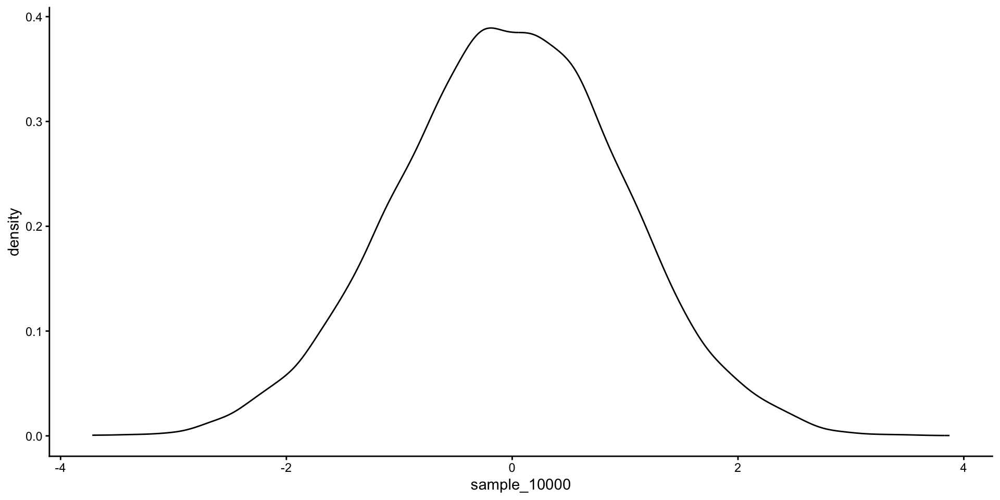

[1] 0.125 0.375 0.375 0.125Lab 3: Continuous Probability
PSYC 7940
February 4, 2026
Review
Last week we learned how to simulate data from discrete distributions and create visualizations.
If variable \(X\) follows a discrete distribution, it means the outcome of the variable \(X\) is categorical:
\[X \sim binom(n, p)\]
- Today, we will learn about continuous distributions, for which probabilities are found for an interval of \(X\) instead of at specific values.
Overview
Major differences between continuous distributions and discrete distributions:
- Probability vs. density
Summarizing continuous distributions
- Mean, Median, Mode
- Quantiles
- Cumulative distribution
- Intervals
Features of Continuous Variables
In discrete distributions, we read probabilities directly from d functions:
However, continuous distributions give densities instead of probabilities:
Note: densities can be >1
Features of Continuous Distributions
Probabilities for continuous distributions are calculated as areas under the curve corresponding to intervals of the variable
- For example, 68% of the standard normal distribution is between -1 and 1.

Calculate Probability
pfunctions give cumulative probabilities, the proportion of the distribution that is below a certain pointq:
Calculate Probability
We can arrive at the same result by integrating over the dnorm function:
Integration can be helpful over a specific range of values:
How to get the same result with pnorm:
Calculate Probability
Quantiles and cumulative distribution
qrepresents the quantile of a functionprepresents the cumulative distribution
For example, if we want to investigate the probability below 1 of the standard normal distribution:
If we want to investigate the probability above 1 of the standard normal distribution:
Calculate Probability
Quantiles and cumulative distribution
The quantile function is the inverse function of the cumulative distribution function.
The quantile is the point of the distribution below which lies a certain % of the data:
qnorm is the inverse of pnorm:
Probability through Simulation
- Simulate many observations from the distribution.
- Find the proportion of data in a certain interval.
- Below, we take 10,000 samples. The more data we simulate, the more accurate the result.
[1] 0.6824The simulated answer is close to the exact answer:
Although it may seem silly to simulate data when an exact answer is available, simulation is useful when the exact probability function is not available.
Summarizing Empirical Distributions
Central tendency
Mean, median, mode
Many distributions have known expressions for these quantities
See https://leahmf.com/distributions or search online
How to summarize central tendency for samples of data, such as simulated data?
Summarizing Empirical Distributions
We can use simulation to help understand the distribution of empirical samples.
- Mean:
- Median:
Summarizing Empirical Distributions
How to find the mode from a sample of continuous values?
For categorical outcomes, the mode is the highest frequency value
For continuous outcomes, it is very rare to observe the exact same value twice, for example:
We have 10000 different values, which means that every point is the mode (most frequently occurring point).
We can instead find a highest density interval to find the most likely region of continuous values.
Summarizing Empirical Distributions
Visualizing the density plot is also a useful method to understand the distribution.
Summarizing Empirical Distributions
Additionally, intervals are helpful to summarize simulated data.
- Percentile Intervals
- Represents the bounds of the center ___% of values
- A 90% percentile interval is bounded by the .05 and .95 quantiles
Summarizing Empirical Distributions
Highest posterior density (HPD) intervals
- HPD intervals give the narrowest interval including certain percent of samples.
lower upper
var1 -1.912371 2.023588
attr(,"Probability")
[1] 0.95as.mcmccan change the dataset to the type of “Markov Chain Monte Carlo” object used thecodapackage. We will talk more about it later in this semester.
Other Distributions in R
In lecture, you learned about many continuous distributions. It is easy to simulate data from them in R:
rexp: exponentialrnorm: normalrlnorm: log-normalrgamma: gammarbeta: betaBefore using any of them, it is a good habit to visualize each distribution.
Some Useful Functions in R
- For example the exponential distribution with \(\lambda = 1\):

Activity
- First, you will work with the gamma distribution.
Identify the parameters and allowed parameter ranges of the gamma distribution. Choose specific values to work with.
Use
ggplotandstat_functionto draw a gamma distribution curve with your chosen parameters.Simulate 10,000 samples from the gamma distribution with your chosen parameters.
Visualize the distribution of your simulated data.
Calculate the 95% equal-tail interval and HDPI from your simulated data.
Compare your results with a classmate’s. If you chose different parameter values, how do the parameters affect your results?
- Repeat the activity for the beta distribution with parameters of your choice.